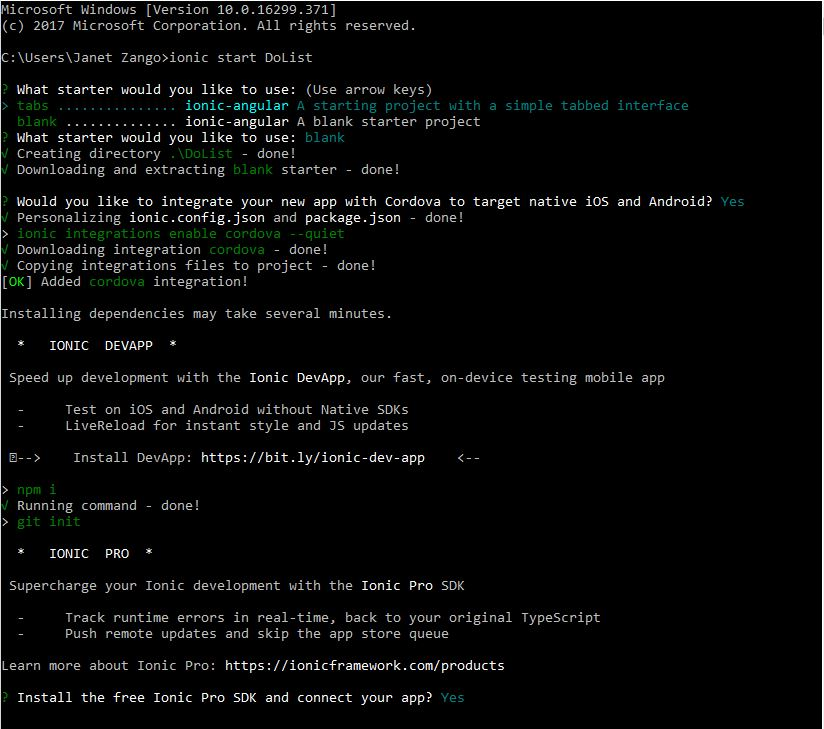

  <div class="container">
      <div>
          <h2>Starting a New Ionic App</h2>
          <p>open the terminal then run:</p>
          <ul>
            <li> ionic start MyIonicProject tutorial</li>
          </ul>
          <ol>
            <li>start-you simply telling the cli to create a app</li>
            <li>MyIonicProject-it is your directly name and your project name</li>
            <li>tutorial-will be you starter template for your project</li>
          </ol>
          <div menu="id" align="center">
         
        </div>
        <p>Ionic also provides the follwoing officail templates:</p>
        <ul>
          <li>Tabs: a simple 3 tab layout</li>
          <li>Sidemenu: a layout with a swipable menu on the side</li>
          <li>Blank: a bare starter with a single page</li>
          <li>Super: a starter project with over 14 ready to use designs</li>
          <li>Tutorial: a guided starter project</li>
        </ul>
        <br>
        <br>
        <br>
        <br>
        <a routerLink='/more-tutorials'><button>More tutorials</button></a>
        </div>
        
  </div>


